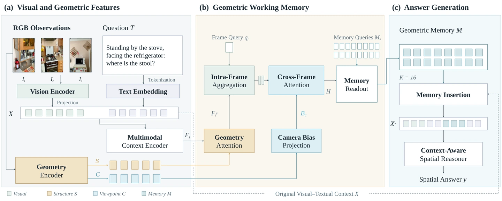

Overview
GaMe investigates geometry as a working memory for multi-view spatial reasoning. Rather than replacing the original visual–language context, a 16-slot memory gathers geometric evidence across views and supplies an additional source of spatial context.
Method
Multiple views. A shared spatial context.
01
Gather evidence
Combine visual and geometric information across views.
02
Form a memory
Condense the evidence into 16 working-memory slots.
03
Augment reasoning
Keep the original visual–language context alongside the memory.


Resources
This page currently presents the project overview. A public manuscript and evaluated examples have not been posted here.